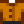

Clay
Jump to navigation
Jump to search
| Clay | |
| Used in crafting and construction. | |
| Information | |
| Source | Artifact Spots • Geodes • Clay Nodes |
| Sell Price | |
Clay is a resource that can be found by tilling dirt, sand, or Artifact Spots, by mining Clay Nodes at the Ginger Island Dig Site, or from cracking open Geodes. It can also be received as a gift from Jas, Leo or Vincent at the Feast of the Winter Star. Vincent sells Clay in his shop at the Desert Festival for  1 Calico Egg. It can also be gifted by a pet dog with max friendship.
1 Calico Egg. It can also be gifted by a pet dog with max friendship.
Crafting
| Image | Name | Description | Ingredients | Recipe Source |
|---|---|---|---|---|
| Quality Retaining Soil (2) | This soil has a good chance of staying watered overnight. Mix into tilled soil. | |||
| Garden Pot | Grows crops from any season when indoors. Outdoors, it can only house seasonal crops. | |||
| Brick Floor (5) | Place on the ground to create paths or to decorate your floors. | |||
| Fiber Seeds (4) | Plant these in any season. Does not require watering. Harvest with the scythe. Takes 7 days to grow. | |||
| Deluxe Retaining Soil | This soil has a 100% chance of staying watered overnight. Mix into tilled soil. | |||
| Bone Mill | Turns bone items into fertilizers. | |||
| Dehydrator | Place 5 pieces of fruit or edible mushrooms inside to dry them. |
Buildings
| Image | Name | Description | Cost | Size |
|---|---|---|---|---|
| Silo | Allows you to cut and store grass for feed. | 3x3 |
Gifting
| Villager Reactions
| |
|---|---|
| Dislike | |
| Hate | |
Bundles
Clay is not used in any bundles.
Tailoring
Clay is used in the spool of the Sewing Machine to create a 
Quests
Two, three, or five Clay may be requested by several fish in Fish Pond quests.
Tips
- It may be worth considering digging for clay in the Mines, as this has a higher clay rate than outside of the mines, can easily be reset, and will additionally produce Cave Carrots and other items such as certain Artifacts depending on floor level. Bombs or other explosives can be used to dig the dirt faster.
History
- 1.1: Kegs no longer require Clay to craft.
- 1.3.27: Added Garden Pot.
- 1.4: Can now be used in Tailoring. Can be requested in Fish Pond quests.
- 1.5: Used as an ingredient to the Fiber Seeds, Deluxe Retaining Soil, and Bone Mill recipes. Can now be dropped by Clay Nodes.
- 1.6: Used as an ingredient for Dehydrator. Can now be purchased at Desert Festival. Can now be gifted by a pet dog with max friendship.
- 1.6.4: Can now be added to Fish Tanks as decoration.
| Resources | |
|---|---|
| Basic | Battery Pack • Bone Fragment • Cinder Shard • Clay • Coal • Fiber • Hardwood • Moss • Stone • Wood |
| Ore | Copper Ore • Iron Ore • Gold Ore • Iridium Ore • Radioactive Ore |
| Bars | Copper Bar • Iron Bar • Gold Bar • Iridium Bar • Radioactive Bar • Refined Quartz |